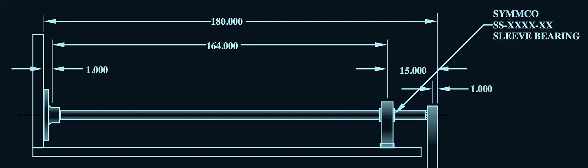
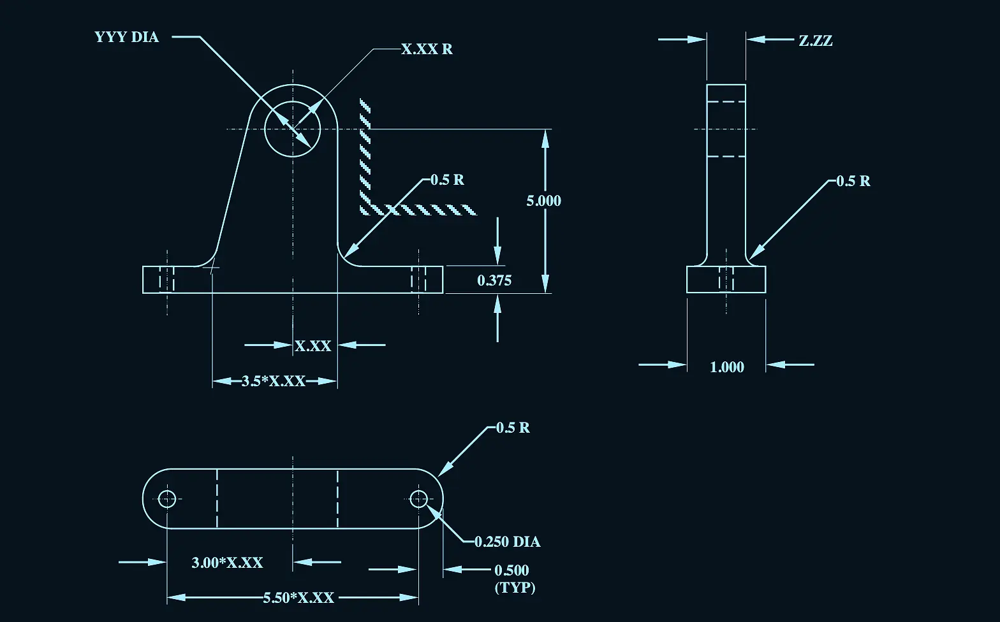
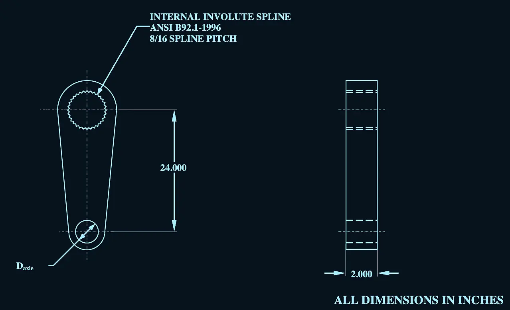
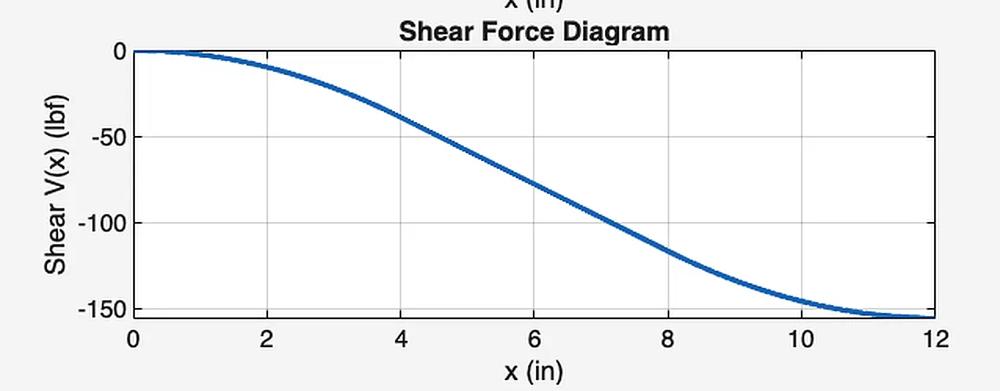
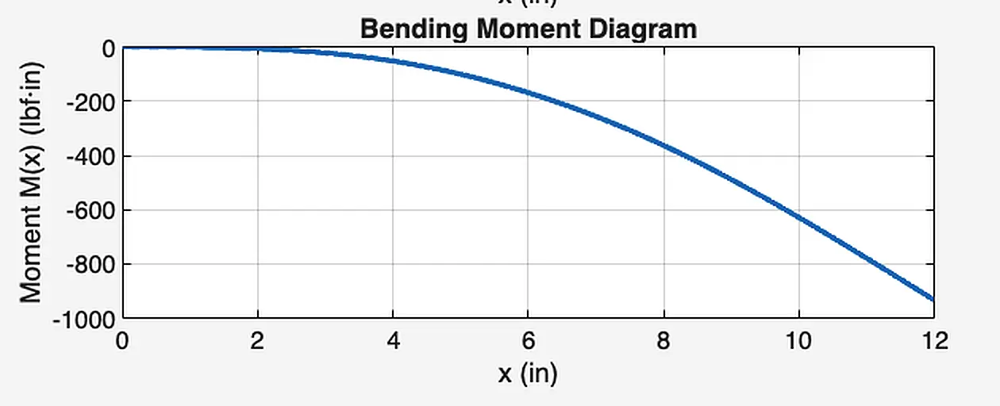

01The requirements
A steel torsion bar carries a wheel and tire through a lever arm that swings between 47° and 53° under load. The bar had to be hollow to save weight (3 in maximum outer diameter), designed for 99.9% reliability, and meet set factors of safety: 1.15 in static torsion, 1.05 on the splines, and 1.10 in fatigue at the bearing support.
02How I approached it
- Torsion bar: sized the outer diameter at 1.625 in, then checked torque and shear across the full range of lever-arm motion.
- Splines: picked ANSI B92.1 8/16-pitch involute splines and checked shear, compression, and shaft stresses.
- Bearing support lug: designed the cast aluminum lug and its bolts, with a 0.50 casting factor on bearing strength.
- Fatigue: ran a DE-Gerber analysis at the bearing shoulder and built S-N curves to confirm life.
- Axle and lever arm: built shear and moment diagrams for the distributed tire load and sized each part from them.
- Cost: used the lowest-strength bolt grade that still passed, as the brief required.
5,962 in·lbf
Maximum applied torque
7,413 psi
Maximum shear stress
15.5
Static factor of safety (required 1.15)
03Gallery





Click any image to enlarge. Technical drawings are shown in an inverted blueprint style.